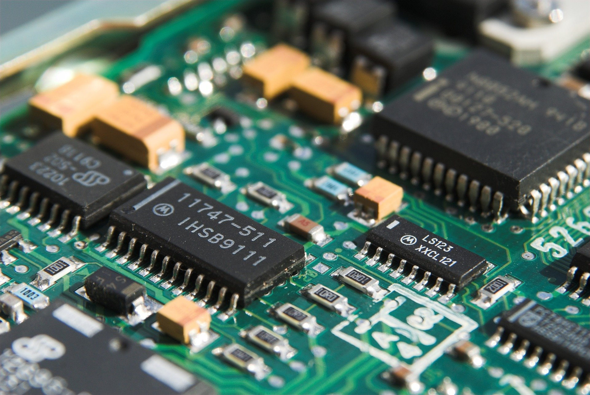

El Ciclo Formativo de Grado Medio en Sistemas Microinformáticos y Redes sirve para formar a profesionales expertos en redes informáticas. Podrás por ejemplo diagnosticar disfunciones en sistemas microinformáticos y redes mediante pruebas funcionales. También instalar, configurar y mantener servicios multiusuario, aplicaciones y dispositivos compartidos en un entorno de red local.
Ciclos Formativos de Informática
¿Te apasiona la Informática? Si es así, te invitamos a descubrir los Ciclos Formativos que ofertamos en nuestro Centro. Sin duda podrás encontrar el que más se adapte a tus intereses y comenzar a prepararte para un brillante futuro profesional. Haz clic en el menú de arriba para saber más.
Sistemas Microinformáticos y Redes

Administración de Sistemas Informáticos en Red

El Ciclo Formativo de Grado Superior en Administración de Sistemas Informáticos en Red es muy completo; podrás trabajar como administrador de sistemas, responsable de Informática, técnico en servicios de Internet, técnico de telecomunicaciones, técnico de mensajería electrónica, técnico en teleasistencia, personal de apoyo y soporte técnico, técnico en administración de base de datos, técnico de redes, técnico en entornos web y supervisor de sistemas.
Desarrollo de Aplicaciones Web

El Ciclo Formativo Superior en Desarrollo de Aplicaciones Web es la formación que estás buscando si quieres convertirte en programador o desarrollador web. Por ejemplo, un técnico en Desarrollo de Aplicaciones Web puede acabar trabajando como diseñador web, técnico en SEO, especialista en analítica web o desarrollador front end, back end o full stack. Esta es una de las especialidades que prepara a los alumnos para trabajar en las profesiones más nuevas. Hay múltiples salidas laborales.